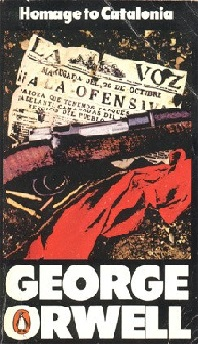

1903 - 1950
Le vrai nom de George Orwell est Eric Arthur Blair. Né à Motihari en Indes en 1903 durant l’Impérialisme anglais, il est fils de fonctionnaire de l’administration des Indes et fait partie de la petite bourgeoisie Anglaise. En 1904 il part en Angleterre avec sa mère et ses sœurs, enfin le père Blair les rejoint en 1911. Éric Arthur Blair étudie de 1917 à 1921 au collège d’Eton après avoir obtenu une bourse. Voulant devenir écrivain et retourner en son lieu de naissance, il devient sergent de police aux Indes en 1922. Mais à une époque où les tensions autour de l’impérialisme de l’Angleterre s’accroissent. L’auteur est témoin et acteur de nombreux mouvements anti anglais, certains villages sont même détruits et ou incendiés… La guerre civile est proche. C’est pour cela qu’il regrette son métier de policier, il sert le colonialisme, alors que c’est un fervent défenseur des droits de l’homme et de la liberté.
En 1927, Blair retourne en Angleterre et abandonne son poste. Il décide de se consacrer à l’écriture durant 22 ans. L’auteur est Influencé par les violences en Inde contre les plus démuni et le contrôle de la population (qui un thème que l’on retrouvera dans ses plus célèbres livres). Il commence alors à enquêter sur les gens les plus pauvres d’Angleterre en travaillant un ouvrage sur les vagabonds de son pays. En 1928, Orwell s'installe à Paris pour continuer cet ouvrage. A Paris il devient l’un de ces vagabonds. Il fait la vaisselle des semaines durant dans un hôtel de luxe pour obtenir une misère. Il écrit alors son livre en faisant parti de cette population démunie. Enfin il retourne en 1929 en Angleterre, pauvre et malade. Il remonte la pente pour devenir enseignant et finalise Dans la Dèche à Paris et à Londres en 1923.C’est à ce moment qu’il utilisa le pseudonyme George Orwell, l’Orwell étant une rivière dans la région de Suffolk.
1934, Blair publie Une fille de pasteur. A Londres, il trouve un travail de libraire et se mari en 1936. Durant cette période, II enquête sur les terribles conditions de vie des mineurs des régions industrielles. Une fois fini, Il fait publier Le Quai de Wigan. Après son mariage il part avec sa femme en Espagne durant l’opposition entre les républicains et Franco. Il participe aux “troubles de mai” et en tire une blessure. Il réussit à s’échapper clandestinement et à éviter les fascistes. De retour en Angleterre, Orwell s’offusque de la communication autour de cet évènement et observe la triste désinformation des médias. Il écrit Hommage à la Catalogne en 1938 pour venger cette partie de l’histoire l’ayant lui-même vécue.
En 1940 Orwell s’engage dans la milice des volontaires, une milice contre l’invasion nazi en Grande-Bretagne. Il envoie en même temps des articles anti Stalinisme pour une revue Américaine, parce que l’Angleterre et la Russie étant allié à ce moment-là il se serait fait censurer. En 1943 avant la dissolution du fascisme, on lui refuse une émission radio sur une remise en question de Franco. Ensuite, en 1944 il achève l’écriture de La ferme des animaux publié en 1945. Alors que la seconde grande guerre n’est pas achevée, il évite la censure de son livre traitant de la révolution Russe, en animalisant les personnages réels à la manière d’une fable. Il change de nouveau de travail et devient un envoyé spécial de The Observer entre la France et L'Allemagne. Pour avoir écrit ses différents livres et articles. Il doit alors traiter la vie politique qui s’y trouve. Riche de cette expérience, une fois à Londres il commence l’écriture de 1984 peut-être la plus connue de ses œuvres. Nous notons alors sa participation à un comité de “défense des libertés fondamentales des individus et des organisations” toujours fidèle à ses convictions. Et le 21 janvier 1950 George Orwell meurt après avoir contracté une tuberculose. Cela après s’être remarié à la suite de la mort de sa première femme.
On remarque donc que la bibliographie d’Orwell fut enrichie par ses nombreuses expériences. 1984 ou La ferme des animaux sont inspirés de la censure qu’il a subie et des nombreux régimes dominateurs dont il a été témoin et acteur de son vivant (impérialisme Anglais aux Indes, régime de Franco, Allemagne nazie, URSS de Staline). C’était un homme ayant le souci du détail voulant se renseigner sur le monde qui l’entoure, et défendant ses convictions sur la liberté par des actes engagés et dénonciateur. Orwell est un grand auteur dont sa vie, ses actes, et ses convictions sont extrêmement liés à ses œuvres. Nous retrouvons évidemment tout cela dans La ferme des animaux.